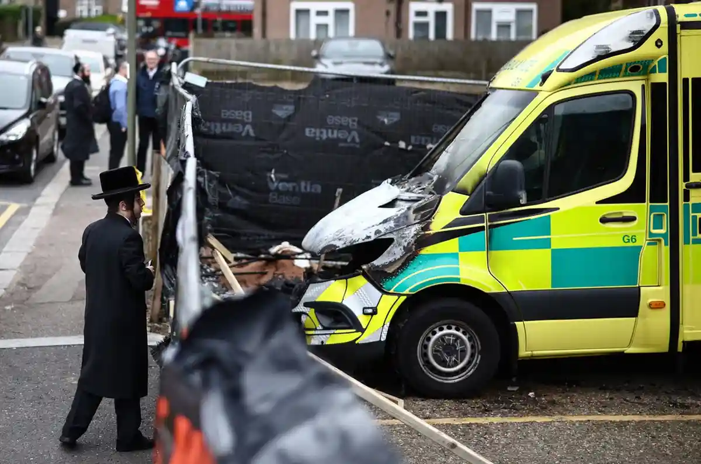

Two Arrested in Suspected Antisemitic Arson Attack in London


- Two suspects (aged 45 and 47) arrested in London
- Four ambulances destroyed, multiple explosions shattered nearby windows
- Investigated as antisemitic hate crime by Metropolitan Police
- Community security increased with armed patrols ahead of Passover
- CCTV suggests at least three people involved; probe ongoing


British police arrested two men on Wednesday in connection with an arson attack on four ambulances belonging to a Jewish organization, which is being investigated as an antisemitic hate crime. The Metropolitan Police said the two males, aged 45 and 47, were arrested in London on suspicion of arson with intent to harm life and taken to a police station for questioning. Officers are checking two residences in north London, a few kilometers from the attack site in Golders Green.
On Wednesday morning, the Metropolitan Police detained one man, 47, in north-west London, and another man, 45, in central London. Both are British nationals. Commander Helen Flanagan, the head of Counter Terrorism Policing London, described the arrests as “an important breakthrough in the investigation.” The arrests, according to borough commander Ch Supt Jason Stewart, were “clearly a significant development.” Police said their investigation into the incident is ongoing, and that CCTV evidence indicated there were at least three people involved.
Why This Incident Matters
It's not just about damage to property; it's also about safety and fear in a community. Attacks like this, especially on ambulances that help people in emergencies, hit harder and make people worry about rising antisemitism. For a lot of people, it makes them more worried that problems in other parts of the world are affecting everyday life in London. The targeting of emergency vehicles operated by Hatzola Northwest — a charity that provides free medical response regardless of religion — has sent shockwaves through the capital’s Jewish community.
Details of the Arson Attack
The blaze broke out early Monday morning in Golders Green, a London neighborhood with a large Jewish population, and destroyed four ambulances belonging to the volunteer organization Hatzola Northwest. Oxygen cylinders in the vehicles exploded, shattering windows in an adjacent apartment building. The Hatzola ambulances were set ablaze in Golders Green early Monday morning, in what is being investigated as an antisemitic hate crime. There were no injuries reported in the incident, but multiple explosions linked to gas canisters shattered the windows of surrounding buildings, forcing some inhabitants to evacuate. Three of Hatzola's five ambulances were completely destroyed and another was damaged in the attack.

Possible Links and Claims of Responsibility
Police have not branded the incident a terror act, but they are looking into a claim of responsibility by a group with possible links to Iran. Authorities are examining a social media claim made by a group called Harakat Ashab al-Yamin al-Islamia, which translates to the Islamic Movement of the Companions of the Right. Israel's government has identified it as a newly formed group with alleged ties to “an Iranian proxy” that has also claimed responsibility for synagogue attacks in Belgium and the Netherlands.
The Met previously stated that the inquiry was focused on an Islamist group with possible links to Iran. Metropolitan Police Chief Mark Rowley said officers are looking into the claim, but it is too early to tie the incident to the Iranian state. Last week, two individuals appeared in court, one a dual Iranian-British national and the other an Iranian national, accused of spying on Jewish targets for Iran.
Community Impact and Security Measures
Also shattered was the community's fragile sense of security, which had already been strained by years of Middle Eastern wars and, according to many, rising anti-Jewish sentiment. The Metropolitan Police Department has increased security at Jewish schools, synagogues, and community centers ahead of Passover next month, including what the department describes as “highly visible firearms patrols.”
Det Ch Supt Luke Williams described additional security measures, including the deployment of police personnel to protect specific places, as well as the installation of very visible armed police patrols. The Community Security Trust applauded the arrests and stated that security efforts would continue at a “high level.” Concerns have grown over rising levels of antisemitism in Britain, and officials have warned of Iran's threat, which includes the surveillance or targeting of Jewish landmarks.
What to Watch Next
There is still a lot of work to be done on the investigation. Authorities continue to seek additional individuals linked to the incident. They're also investigating potential wider ties, including any that might extend beyond national borders. Monitoring shifts in security protocols, particularly within Jewish communities, is equally vital. It's important to assess the impact of these changes on the strength of responses to hate crimes across the United Kingdom.
Investigation